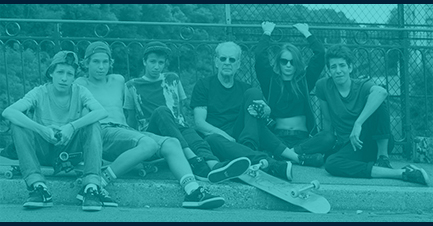

Welcome to “Oh Snap! The 90’s”, a website dedicated to, what I consider to be, the best generation to grow up during. Being born a Generation Y/Millennial/Gen Next, is a very unique squeeze of life. We had the best movies, music, games, cartoons and toys. We we’re born before Computers took over the world and had fun ruling the neighborhood, but have also been spoiled by all of the amazing things the boom of technology has brought to us. We are the first generation to be truly tech savvy.
We grew up during a very peaceful time when kids we’re able to run around free outside till well after the street lights came on without the fear of being kidnapped or attacked. Then life seemed to take that safe time away from the world with events like 9/11 and the recession. For the first time we, the 90’s kids, realized that the world wasn’t the safe perfect world we thought it was.
So, when we look back at the 90’s we’re not only thinking about the awesome TV shows, or cool toys, but we’re thinking of a safer more simpler time in life.